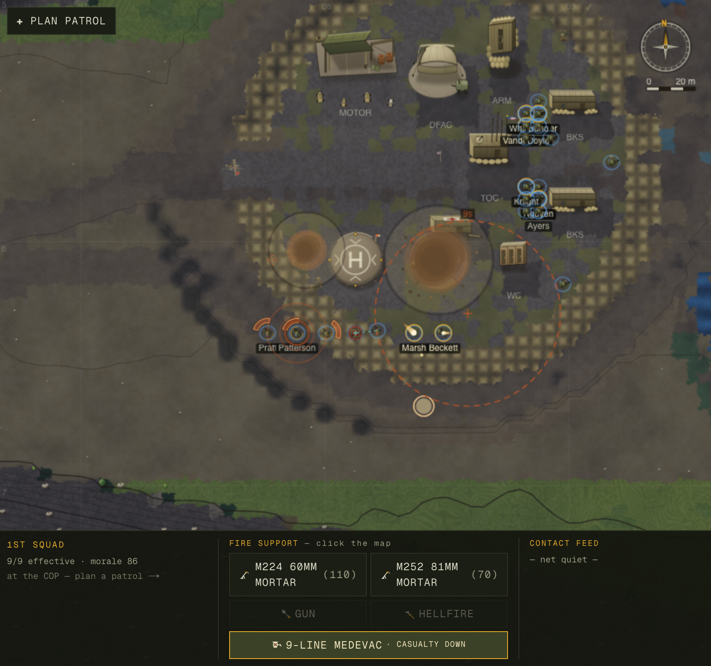

The squad stopped dropping mortars on itself
In the Mountains · call-for-fire realism pass · 2026-06-06 · issue 013
SOLO → metricize → fix → adversarial-verifyengine-only change
— the player report that started this.
Two complaints in one sentence, and both were real and measurable. Under the game's hands-off combat model the AI raises a call-for-fire and the commander approves or denies it — so an AI that proposes a bad grid is a bug in the squad leader's brain. This pass turned the fuzzy report into hard numbers, found the two mechanisms, fixed them as one doctrine-shaped gate, and proved the win on seeds it was never tuned on.
1 · Metricize first (no fix without a number)
A new probe, scripts/fire-mission-probe.ts, drives 40 deployments into contact,
intercepts every AI call-for-fire at the instant it is raised, and scores the
proposed aimpoint against independent ground truth: distance to the nearest friendly, distance to the
nearest observed/living enemy, and the weapon's danger-close radius. In approve mode it also
lets the rounds fall and counts real fratricide — friendlies wounded or killed with
casualtyByFaction === "us" (the blast in detonate() is faction-blind, so
this is genuine, not cosmetic).
| metric (40 seeds, HEAD) | deny mode | approve (rounds land) | what it means |
|---|---|---|---|
d_friendly min | 23 m | 10 m | closest a round was called to a friendly (81 mm lethal radius = 24 m) |
| danger-close % | 3% | 4% | aimpoint inside blast×2.5 of a friendly — "much too close" |
| on-friendlies % | 0% | 1% | aimpoint inside the lethal blast of a friendly |
| projection % | 9% | 32% | fired on a grid with no enemy observed at all |
| off-target % (vs seen enemy) | 18% | 52% | aimpoint >60 m from the nearest enemy the squad can see — "nowhere near the enemy" |
| US fratricide / 40 deps | — | 1 | a friendly hit by an AI-called mortar |
2 · The two mechanisms
"Nowhere near the enemy"
The aimpoint was threatCentroid — the average of every visible enemy.
On a two-sided / L-shaped ambush (fire coming from two directions) the average of the two groups
lands between them — which is right where the squad is. And the only guard
(threatIsReal) let a "shot-at-from-a-direction" contact through with no PID, so it
would fire on a projected 120 m guess.
"Much too close"
Nothing stopped the AI from proposing a grid inside its own danger-close radius.
isDangerClose() existed but only labelled the round "DANGER CLOSE" — it never
prevented the call. So the squad could, and did, drop high explosive on itself.
3 · The fix — one doctrine-shaped gate
A real forward observer obeys two hard rules; the AI now enforces both, so it never proposes a grid a commander would refuse (FM 3-09 Call for Fire, ATP 3-21.8):
- PID the target. New
fireAimpoint()aims at the centroid of the densest cluster of currently-observed enemies (cluster radius 35 m) — never the global centroid, never a projection. No eyes on → no mission. - Danger close is the commander's call, not a default.
maybeRequestFires()withholds the request if the aimpoint is withinblast×2.5of any friendly. When the only target is danger-close the squad fights with organic weapons or breaks contact. (This also stops calling fire onto an objective the maneuver element is assaulting onto — the same geometry.) - FDC check-fire (in
stepFireMissions): aborts a friendly mission's remaining rounds if troops maneuver within a round's lethal blast of the impact point after the mission is cleared — the dynamic case the call-time gate can't foresee.

4 · The result (same probe, same seeds)
| metric | HEAD → After (deny) | HEAD → After (approve) |
|---|---|---|
d_friendly min | 23 → 40 m | 10 → 69 m |
| danger-close % | 3% → 0% | 4% → 0% |
| on-friendlies % | 0% → 0% | 1% → 0% |
| off-target vs living enemy (tick-robust) | → 0% | → 0% |
| US fratricide / 40 deps | — | 1 → 0 |
The aimpoint now sits on a living enemy in every case (d_enemy_live median
~2 m). A residual ~5% "projection" in the probe is a measurement artifact — PID
existed when the AI decided (mid-tick) but lapsed one tick later when the probe samples — proven by
the tick-robust metric offLive% = 0%. The AI never fires on a guess.
Held-out proof (no curve-fit)
Re-run on an entirely different family of valleys (hold-0..29 — the
prefix seeds the whole procedural generator, so different mountains, rivers, villages, spawns):
88 requests → danger-close 0%, on-friendlies 0%, off-living-enemy 0%, min standoff 55 m.
The two constants (cluster radius 35 m, blast×2.5) are doctrinal, not fit to the tuning
seeds — which is why they transfer.
5 · Verification (don't trust yourself)
- Standing checks green:
tsc✓,next build✓,smoke.ts(no-NaN + serialize round-trip) ✓,balance.ts12×50 ✓ (KIA 0.75, 0 civilian casualties, no stalls). - Independent adversarial review: a fresh agent re-read the code and tried to
break it across six attack lines (remaining danger-close paths, projection/stale ghosts,
determinism, check-fire correctness, wrongful denial, serialization). Verdict:
"fix is sound," 90% confidence, no new bugs. It surfaced the deliberate
blast×2.5(withhold) vsblast×1.3(check-fire abort) asymmetry, now documented. - Live app: the game boots and renders combat with the change; the fire-support HUD (60 mm / 81 mm mortar, GUN, HELLFIRE, 9-LINE MEDEVAC) is intact. The reticle render path is unchanged — only which cell it points at.

6 · Restraint logged
I deliberately did not add an "in-extremis danger-close override" that would let the AI call fire on itself when about to be overrun. That reintroduces exactly the reported failure mode, and the automatic break-contact safety already pulls a combat-ineffective squad off the X. The AI's job is to never propose a grid a commander would refuse; choosing to accept danger-close risk stays a human decision.
Files: lib/sim/ai/squad-combat.ts (fireAimpoint +
danger-close gate), lib/sim/combat.ts (FDC check-fire). Probe:
scripts/fire-mission-probe.ts. Verbatim numbers: baseline-{deny,approve}.txt,
after-{deny,approve}.txt in this folder. — Could an AI really have done this? It found a
one-line averaging mistake and a missing safety the way a soldier would: by measuring where the rounds
actually fell, not by guessing.